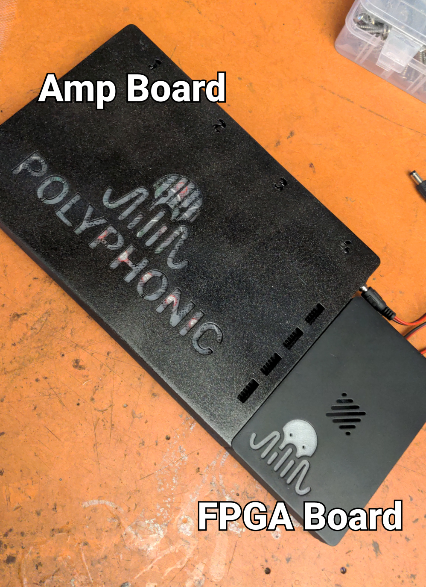
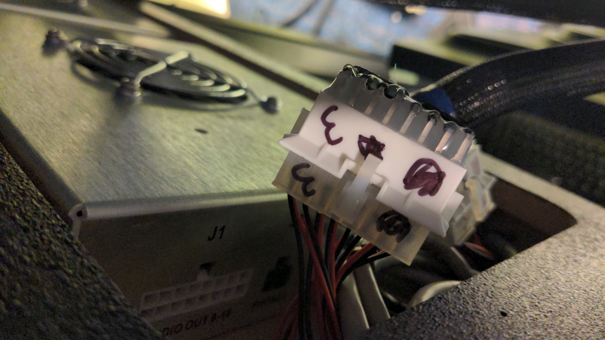
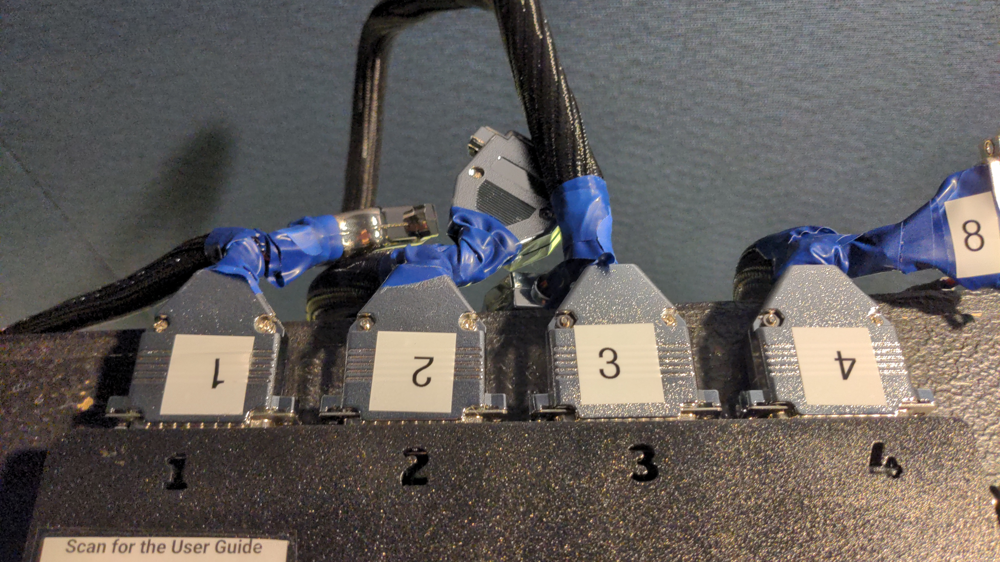
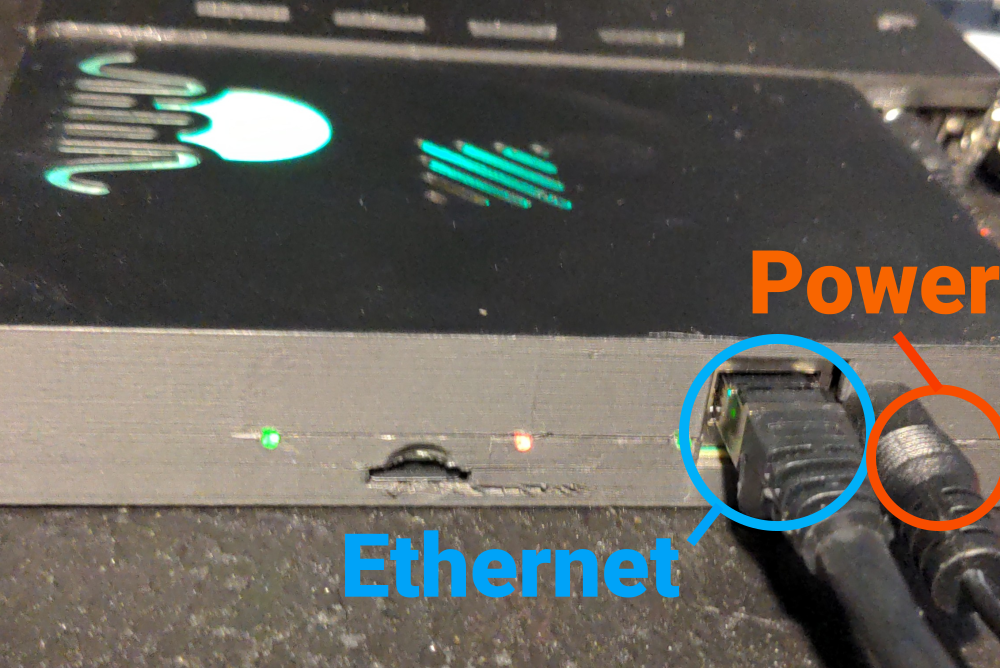
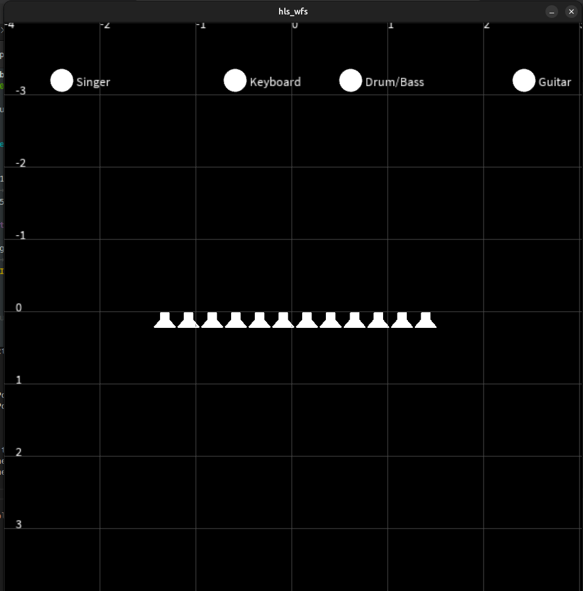

User Guide
0. Naming
The system is composed of two boards. The smaller board, which contains the FPGA, will be referred to as the
FPGA board. The larger board, which contains the amplifiers, will be referred to as the
amp board. Connect the two boards as the picture below.

1. Connecting the Board to the WFS System
For simplicity, the amp board uses Sub-D25 connectors. Using the provided custom cables, connect the DB25 ports to
the speaker array. The DB25 connectors are numbered 1 to 4. On the speaker array side, connect each cable to the
correspondingly numbered port. Be careful, these connectors are fragile!


2. Powering the System
Connect the power supply to the FPGA board. Use a 5 V power supply (center-positive) capable of delivering at least
4 A for a single 32-channel unit. Then connect an Ethernet cable to the FPGA board.

3. Powering the Amplifier
The FPGA board outputs two identical power cables at the top. Connect one of them to the amplifier input power
connector located on the right side of the amp board.
4. Waiting for Boot
The FPGA boots automatically when powered on. Boot is complete when the Polyphonic logo turns green.
You can then begin communicating with the system via Ethernet.
5. Creating the Host Computer Ethernet Server
To create the server, clone our Git repository:
https://github.com/inria-emeraude/syfala
Navigate to the server directory:
cd syfala/source/linux/syfala-server
Then run the server using Rust (install Rust if needed):
pw-jack cargo run --release
If the server is running correctly, you should see a message similar to:
INFO server/src/main.rs:114: Starting UDP
6. Redirect Your Sound Source to the FPGA
You should now see the system in your preferred JACK routing tool.
For example, you can use qpwgraph.
7. Routing From Your DAW
You can now connect your audio sources from your DAW to the system
(see the Ardour example in the image below).
8. Control with OSC
You can either use the interface written in Processing (install Processing if needed).
Open the following file with the Processing GUI and run it:
syfala/examples/cpp/wfs/interface/hls_wfs/hls_wfs.pde
You can also send OSC commands directly, controlling the x and y position of each source with the following convention:
"/wfs/source<i>/y/<yPos>"
"/wfs/source<i>/x/<xPos>"
Replace <i> with the source number.
yPos is typically in the range -4 (source far away) to 4 (source near), and
xPos is typically in the range -2.5 (left) to 2.5 (right).
